教你炒股票 27： 盘整背驰与历史性底部¶
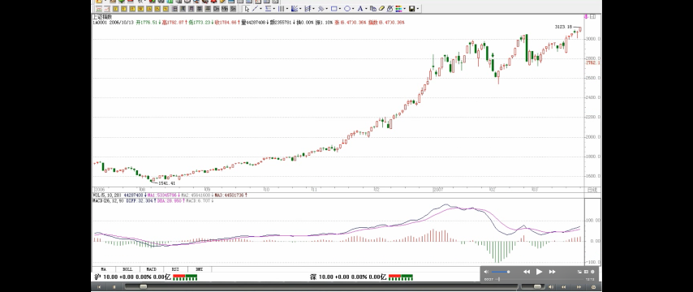
趋势背驰的一般情况
- 至少是第二个中枢产生背驰
- 绝大多数情况，第二个中枢就产生背驰
- 大级别，特别是日线以上级别（日线或者日线以上），90%以上
- 小级别，例如 1 分钟级别，比例小一点，但也是占大多数，一般 4、5 个中枢以后才出现背驰的，都相当罕见了
趋势，一定有至少两个同级别中枢，对于背驰来说，肯定不会发生在第一个中枢之后，肯定是至少是第二个中枢之后，对于那种延伸的趋势来说，很有可能在发生第 100 个中枢以后才背驰，当然，这种情况，一般来说，一百年见不到几次。第二个中枢后就产生背驰的情况，一般占了绝大多数的情况，特别在日线以上的级别，这种就几乎达到 90%以上，因此，如果一个日线以上级别的第二个中枢，就要密切注意背驰的出现。而在小级别中，例如 1 分钟的情况下，这种比例要小一点，但也是占大多数。一般 4、5 个中枢以后才出现背驰的，都相当罕见了。 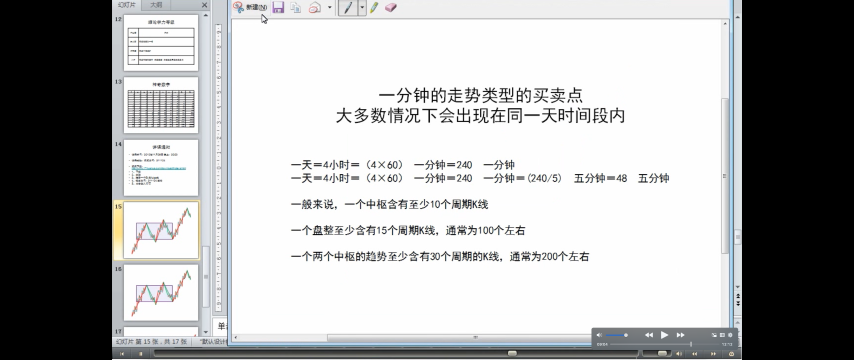
定义：盘整背驰
- 技术含义
- 小级别的盘整背驰
- 高位的盘整背驰，风险很大
- 低位的盘整背驰，会构成第二、三类买点
- 背驰与买点的一般情况
- 多数的第二、三类买点，由盘整背驰构成
- 盘整背驰产生第二、三类买点的走势情况
- 第一类买点，多数由趋势背驰构成
定义：背驰段
如果在第一个中枢就出现背驰，那不会是真正意义上的背驰，只能算是盘整背驰，其真正的技术含义，其实就是一个企图脱离中枢的运动，由于力度有限，被阻止而出现回到中枢里。一般来说，小级别的盘整背驰，意义都不太大，而且必须结合其位置，如果是高位，那风险就更大了，往往是刀口舔血的活动。但如果是低位，那意义就不同了，因为多数的第二、三类买点，其实都是由盘整背驰（注解：次级别的）构成的，而第一类买点，多数由趋势的背驰（注解：本级别的？次级别的？）构成。一般来说，第二、三类的买点，都有一个三段的走势，第三段往往都破点第一段的极限位置，从而形成盘整背驰，注意，这里是把第一、三段看成两个走势类型之间的比较，这和趋势背驰里的情况有点不同（疑问：不同在哪里？），这两个走势类型是否一定是趋势，都问题不大，两个盘整在盘整背驰中也是可以比较力度的。这里，先补充一个定义，就是在某级别的某类型走势，如果构成背驰或盘整背驰，就把这段走势类型称为某级别的背驰段。 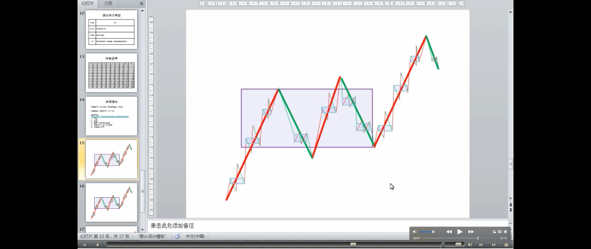 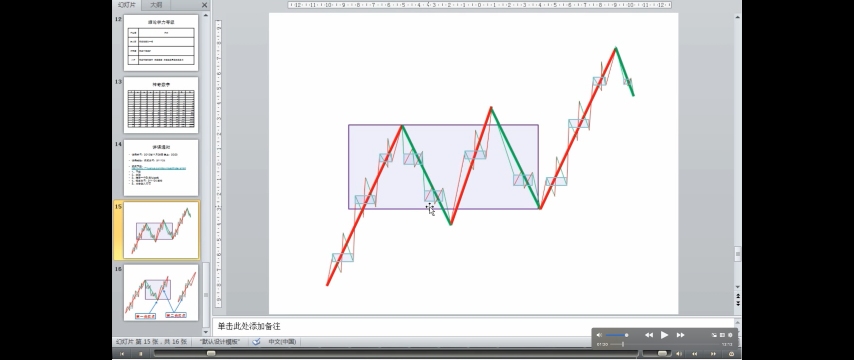 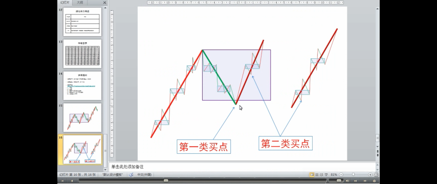 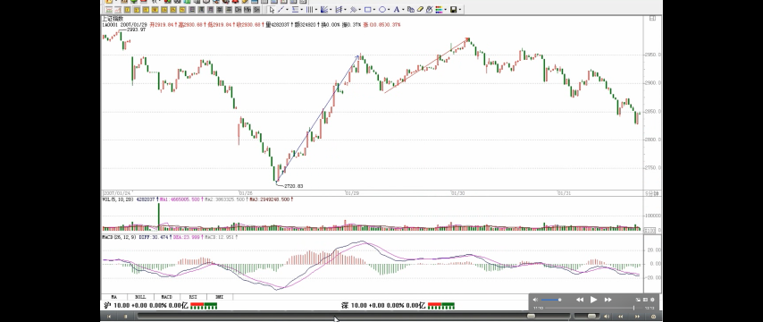
盘整背驰在大级别上的应用：发现历史性的大底部
例子
MACD 明显出现标准的背弛形态：一般来说，只要其中一个符合就可以是一个背弛的信号，两个都满足就更标准了
前提条件：第三段跌破第一段的 3.2 元。万科跌破 3.2 元就发出背弛的信号，季度线跌破 3.2 元后，这个背驰的成立已经是确认了
- 判断条件 1:回抽 0 轴的黄白线再次下跌不创新低
判断条件 2:而且柱子的面积是明显小于第 1 段的
寻找精确的买点
- 精确的买点可以继续从月线、周线、日线、甚至 30 分钟一直找下去，如果你的技术过关，你甚至可以现场指出，就在这 1 分钟，万科见到历史性大底部。第三段的走势，从月线、周线、日线等，可以一直分析下去，找到最精确的背驰点。
疑问🤔️：例子中的第二段，为什么不是到前面的那个高点？
盘整背驰最有用的，就是用在大级别上，特别是至少周线级别以上的，这种盘整背驰所发现的，往往就是历史性的大底部。配合 MACD，这种背驰是很容易判断的。这种例子太多，例如 000002，谁都知道该股是大牛股，但这牛股的底部，如果学了本 ID 的理论，是谁都可以发现的。请看该股的季线图，也就是三个月当成一个 K 线的图。1993 年第一季度的 36。7 元下跌到 1996 年的第一季度的 3。2 元，构成第一段，刚好前后 13 季度，一个神奇数字；1996 年的第一季度然后到 2001 年第三季度的 15。99 元，构成第二段，一个典型的三角形，中枢的第二段出现三角形的情况很常见（疑问：？），前后 23 季度，和 21 的神气数字相差不大；2001 年第三季度下跌到 2005 年的第三季度的 3。12 元，前后刚好 17 周，神奇数字 34 的一半，也是一个重要的数字。第一段跌幅是 33.5 元，第三段是 12.87 元，分别与神奇数字 34 和 13 极为接近。因为 13 的下一个神气数字是 21，加上前面说过的 17，都不可能是第三段的跌幅，因此，站在这种角度，万科的 2.99 元附近就是铁底了。不过这种数字分析意义不大，最简单的判断还可以用 MACD 来，第三段跌破第一段的 3.2 元，但 MACD 明显出现标准的背弛形态： 回抽 0 轴的黄白线再次下跌不创新低，而且柱子的面积是明显小于第 1 段的，一般来说，只要其中一个符合就可以是一个背弛的信号，两个都满足就更标准了。从季度图就可以看出，万科跌破 3.2 元就发出背弛的信号。而实际操作中，光看季度线是不可能找到精确的买点的，但对大资金，这已经足够了，因为大资金的建仓本来就是可以越跌越买，只要知道其后是一个季度级别的行情就可以了。而对于小资金来说，这太浪费时间，因此精确的买点可以继续从月线、周线、日线、甚至 30 分钟一直找下去，如果你的技术过关，你甚至可以现场指出，就在这 1 分钟，万科见到历史性大底部。因为季度线跌破 3.2 元后，这个背驰的成立已经是确认了，而第三段的走势，从月线、周线、日线等，可以一直分析下去，找到最精确的背驰点。
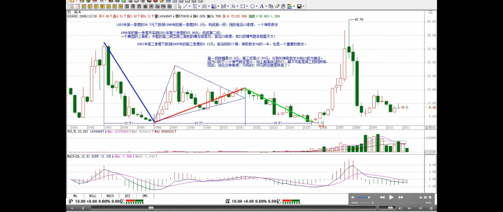
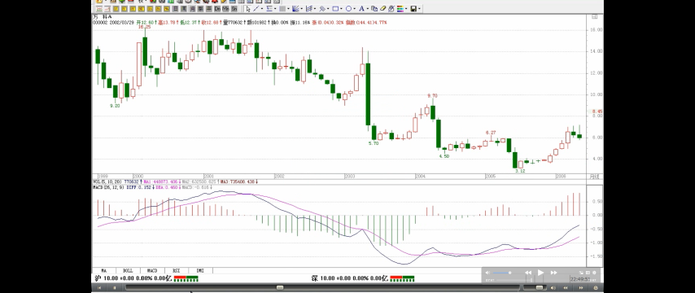

区间套：从大级别往下精确找大级别买点的方法
- 具体方法
学过数学分析的，都应该对区间套定理有印象。这种从大级别往下精确找大级别买点的方法，和区间套是一个道理。以万科为例子，季度图上的第三段，在月线上，可以找到针对月线最后中枢的背驰段，而这背驰段，一定在季度线的背驰段里，而且区间比之小，把这个过程从月线延伸到周线、日线、30 分钟、5 分钟、1 分钟，甚至是每笔成交，这区间不断缩小，在理论上，甚至可以达到这样一种情况，就是明确指出，就这一笔是万科历史底部的最后一笔成交，这成交完成意味着万科一个历史性底部的形成与时代的开始。当然，这只是最理想的情况，因为这些级别不是无限下去的，因此，理论上并不能去证明就是一个如极限一样的点状情况的出现，但用这种方法去确认一个十分精确的历史底部区间，是不难的。
精确大转折点寻找程序定理
推而广之，可以证明缠中说禅精确大转折点寻找程序定理：某大级别的转折点，可以通过不同级别背驰段的逐级收缩范围而确定。换言之，某大级别的转折点，先找到其背驰段，然后在次级别图里，找出相应背驰段在次级别里的背驰段，将该过程反复进行下去，直到最低级别，相应的转折点就在该级别背驰段确定的范围内。如果这个最低级别是可以达到每笔成交的，理论上，大级别的转折点，可以精确到笔的背驰上，甚至就是唯一的一笔。（当本 ID 十几年前发现这个定理时，有一个坏毛病，总是希望在实际操作上也精确到笔，因此还发明了其他古怪的看盘方法，不过这些其实都意义不大，1 分钟的背驰段，一般就是以分钟计算的事情，对于大级别的转折点，已经足够精确了，对大资金，基本没什么用处。）
上一段的例子
区间套
要理解本章，如果忘了的，最好把高数里的区间套定理复习一下，这个思路是一样的，当然，由于级别不是无限可分的，不可能达到数学上唯一一点的精度。各位有时间可以参考一下，600640、000001、000006、000009、000012、600643 的季度图，看看历史底部是怎么形成的。当然，只有特别老的股票才可以用季度图。而月线图的，看 600663、一个标准的例子。 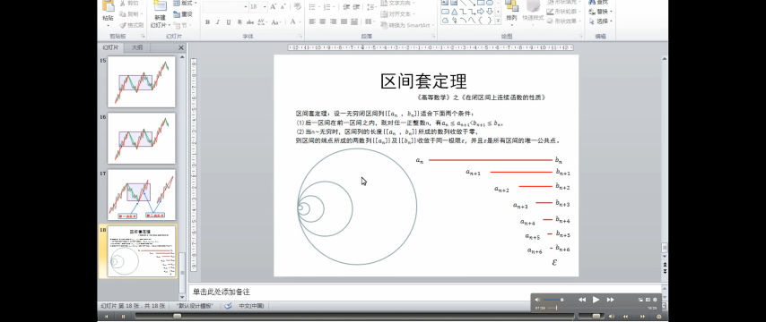 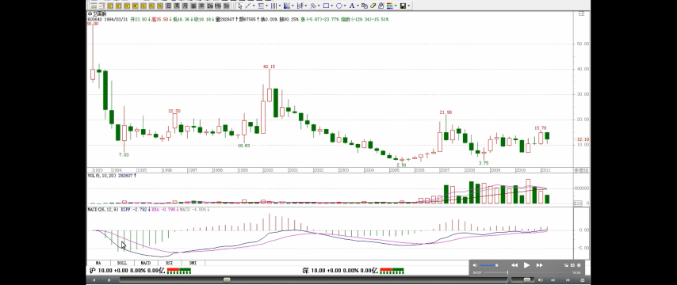 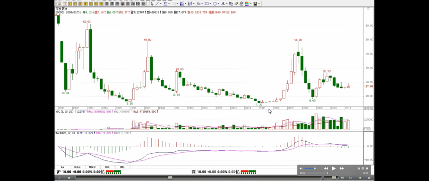 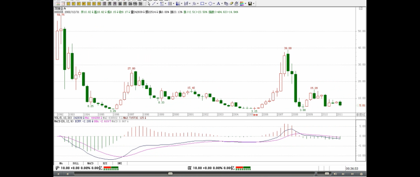 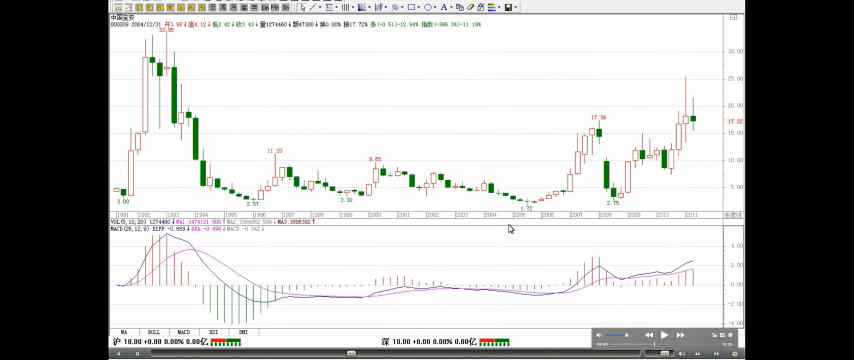 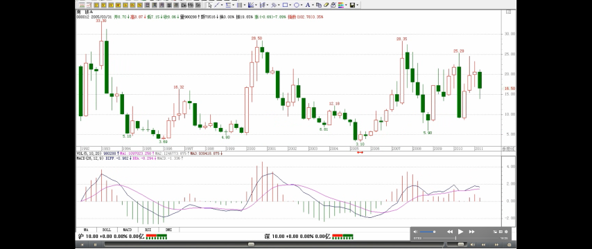 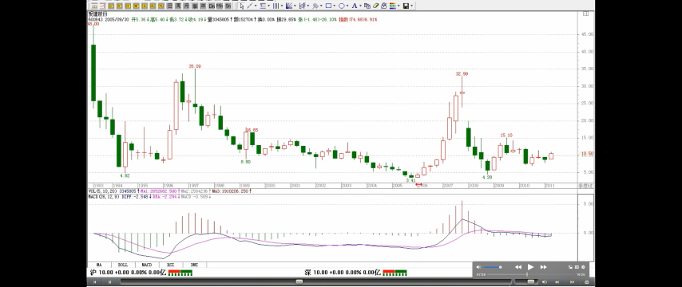 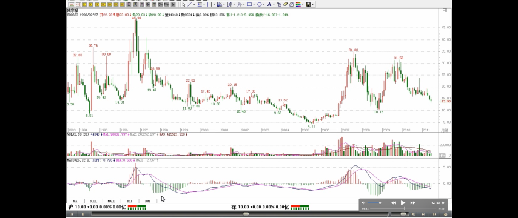
第一类买点：趋势背驰构成的
类第一类买点：盘整背驰构成的买点，大级别盘整背驰构成的类似第一类买点的买点
超大级别里，往往不会形成一个明显的趋势，只有一个中枢，是一个盘整
上面说的是背驰构成的买点，注意，第一类买点肯定是趋势背驰构成的，而盘整背驰构成的买点，在小级别中是意义不大的（疑问🤔️：在30分钟/日线级别，类第一类买卖点也是有意义的，买入后也会有不错的收益），所以以前也没专门当成一种买点，但在大级别里，这也构成一种类似第一类买点的买点，因为在超大级别里，往往不会形成一个明显的趋势，这也就是以前回帖曾说过的，站在最大的级别看，所有股票都只有一个中枢，因此，站在大级别里，绝大多数的股票都其实是一个盘整，这时候就要用到这因为盘整背驰而形成的类第一类买点了。这个级别，至少应该是周线以上。
类第二类买点
类似的，在大级别里，如果不出现新低，但可以构成类似第二类买点的买点，在 MACD 上，显示出类似背驰时的表现，黄白线回拉 0 轴上下，而后一柱子面积小于前一柱子的。一个最典型的例子，就是季度图上的 600685，2005 年的第三季度的 2.21 元构成一个典型的类第二类买点（疑问🤔️：不是类第一类买点后第一次次级别回调的低点吗？这里就是3.45？）。在实际操作中，2.21 元的相应区间的寻找，也是按上面级别逐步往下找背驰段的方法实现。 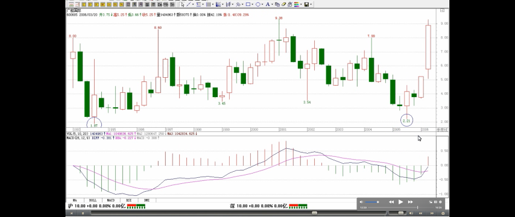
不过，周线找出来的，不一定是历史性大底，可能就是一个比较长线的底部
如果把这种方法用在日线上，也是可以的，但相应的可靠性就不是那么绝对了
这一课，把找大牛市底部的一个方法说了，这个方法足以让你终生受用。随着以后股票越来越多，老股票越来越多，这种方法将在下一轮大牛市中大放异彩，这大牛市搞不好是 30 年以后的事情了，30 年以后，希望你还能记得这一课。当然，如果按照周线级别，那不用等 30 年了。不过，周线找出来的，不一定是历史性大底，可能就是一个比较长线的底部。如果把这种方法用在日线上，也是可以的，但相应的可靠性就不是那么绝对了。
（待续）
补充一个本 ID 理论的学历标准
精通找出各级别中枢的，是幼儿圆毕业
精通分别中枢的新生、延伸、扩展的，是学前班毕业
精通分辨盘整背驰与背驰，躲过盘整背驰转化为第三类买卖点的是小学毕业
各位自己对照一下。